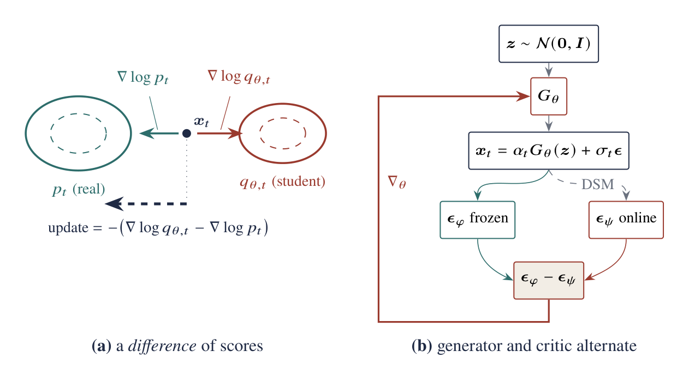

1. The same-looking update can mean different things
Part I derived the reverse-KL generator gradient
Before comparing names, it helps to turn this equation into three plain questions:
Reading Equation (2) from left to right gives three independent decisions:
- Where should training focus? Reverse KL weights every sampled location equally; other divergences emphasize places the student is missing.
- How do we know what the student distribution looks like? We can substitute one noise sample, train a second denoiser, or estimate a density ratio with a discriminator.
- At which state is the comparison valid? A formula derived for a noised clean image may become wrong at an intermediate phase state.
These questions are easy to mix together. The first controls mode coverage, the second controls estimator error, and the third controls whether the training target is correct at all.

2. SDS: a conditional score substituted for a marginal score
The hard term in Equation (1) is the score of the student's whole output distribution. SDS avoids learning it. Instead, it inserts the particular noise vector \(\boldsymbol\epsilon\) used to create the current \(\mathbf x_t\):
One corrupted sample is not the whole student distribution
Conditioned on one latent \(\mathbf z\), the corruption law is
The same noisy point \(\mathbf x_t\) could have come from many different clean student outputs. Reverse KL needs the score after considering all of those possibilities—the mixture over all latents, \(q_{\theta,t}(\mathbf x_t)=\int q(\mathbf x_t\mid\mathbf z)p(\mathbf z)d\mathbf z\). Differentiating that mixture gives
So the correct fake score averages over all latent/noise explanations that could have produced the observed \(\mathbf x_t\). SDS keeps only the explanation sampled in the current iteration.
One SDS step is a reconstruction step
Let \(\mathbf x=G_\theta(\mathbf z)\), and form the teacher's clean prediction
Because \(\mathbf x_t=\alpha_t\mathbf x+\sigma_t\boldsymbol\epsilon\),
Therefore, up to a positive time-dependent scalar and with gradients stopped through the teacher, one sampled SDS update is the gradient of
This makes “pointwise” literal: each iteration moves one current render toward one teacher-denoised pseudo-target. No term here checks whether the collection of all renders remains diverse.
The fake-score term vanishes in expectation
The difference is not merely extra Monte Carlo noise. Since
depends on \(\mathbf z\) but not on the independently sampled zero-mean \(\boldsymbol\epsilon\),
Why strong classifier-free guidance moves SDS
With target prompt \(c\), source branch \(u\), and guidance scale \(\omega\), decompose the residual:
At the very large guidance scales used in SDS, the second term often dominates. It pulls toward the conditional target and pushes away from the unconditional source. This can be useful, but the unconditional branch is still not the score of the stochastic student's full output distribution.
3. VSD and Diff-Instruct: reconstruct the student score
VSD and Diff-Instruct pay the cost SDS avoids: they train a second denoiser to describe the student's current output distribution. For any differentiable image-producing system \(\mathbf x=R_\theta(\boldsymbol\xi)\), they generate current outputs, add noise, and solve an ordinary denoising problem:
Condition on \(\mathbf x_t\). The standard square-loss decomposition is
The variance term is independent of \(f\), so the population minimizer is
This auxiliary loss is not arbitrary. At its optimum, the second denoiser returns exactly the conditional average needed for the student's marginal score—and therefore restores the entropy term that SDS loses. Training alternates between teaching this denoiser what the student currently generates and using it to update the student.
Critic lag produces a systematic outer-gradient error
Let \(\boldsymbol\epsilon_\psi^\star\) be the exact conditional mean and \(\boldsymbol\epsilon_\psi\) the learned estimate. Subtract the ideal generator gradient from the applied one:
Using \(\|\mathbf a^\top B\|\leq\|\mathbf a\|\|B\|\) and the triangle inequality,
The difficulty is that the student changes after every generator update. A fake-score model trained on yesterday's generator still describes yesterday's distribution. Its error can therefore point the generator in the wrong direction, not merely add random noise. Equation (9) also shows why a small denoising loss is not enough: the remaining error is magnified by the time weight, \(1/\sigma_t\), and the generator Jacobian.
4. Why GANs and two-score methods are related
The two-score bracket is the spatial gradient of a log density ratio:
For the original GAN classification problem, the optimal discriminator is
A discriminator estimates the value of the log density ratio \(\log(p/q)\). Two score networks estimate the direction in which that ratio changes. They expose the same population quantity in two forms, but only when the estimators are ideal. In practice, a discriminator is informed mainly by the batches it sees and can be unstable; score matching compares multiple noise scales but must keep its fake-score model synchronized with a moving student.
This also clarifies hybrid methods. ADD combines a teacher-derived score-distillation term with a real-data adversarial term. Core LADD uses teacher-generated positives in latent feature space, so its adversarial term remains teacher-derived. “Adversarial” tells us how a ratio is estimated, not where the reference distribution came from.
5. DMD keeps a safety rope; DMD2 replaces it with a different signal
The original DMD objective is a hybrid:
The dataset \(\mathcal D\) contains noise–image pairs created by running the full teacher ODE. The reverse-KL term asks whether all outputs look right as a population. The regression term still tells each individual noise input where the teacher sent it. They solve different problems:
- The reverse-KL term allows a new latent-to-image map and concentrates capacity on realistic outputs.
- The paired regression term gives every sampled latent a designated endpoint. It is ordinary trajectory distillation and acts as an explicit coverage anchor.
DMD2 removes the expensive pair dataset and adds a discriminator trained with real images. That is useful, but it is not the same safety rope. The discriminator can tell whether the output population differs from real data—and can even expose teacher errors—but it still does not assign a destination to each latent.
| Component | Constrains | Reference | Main role |
|---|---|---|---|
| DMD score term | Marginal | Teacher | Sharp teacher-distribution matching |
| DMD regression | Coupling | Teacher | Coverage anchor for every latent |
| DMD2 score term | Marginal | Teacher | Teacher prior |
| DMD2 discriminator | Marginal | Real data | Correct teacher/data mismatch |
| rCM consistency term | Coupling | Teacher/data construction | Coverage-seeking regression |
| rCM score term | Marginal | Teacher | Counter limited-capacity averaging |
6. Phased DMD: the input distribution determines the target
Phased DMD introduces a different issue. In an early phase, the input \(\mathbf x_s\) is already noisy; it is not a clean image. We must therefore derive the denoising target from the transition that actually produced the later state \(\mathbf x_t\), rather than reuse the familiar clean-image target.
The observable conditional score of this actual transition is
Project it over the posterior of \(\mathbf x_s\) exactly as in Equation (4):
Squared regression onto \(-\boldsymbol\epsilon/\tau\) therefore recovers the required marginal score. Every prediction parameterization follows from one affine conversion. If
then substitute the transition score to obtain
| Prediction | Conversion from score \(\mathbf s_t\) | Phased target |
|---|---|---|
| Score | \(\widehat{\mathbf s}\) | \(-\boldsymbol\epsilon/\tau\) |
| Noise | \(\widehat{\boldsymbol\epsilon}=-\sigma_t\widehat{\mathbf s}\) | \((\sigma_t/\tau)\boldsymbol\epsilon\) |
| Clean sample | \(\widehat{\mathbf x}_0=(\mathbf x_t+\sigma_t^2\widehat{\mathbf s})/\alpha_t\) | \((\mathbf x_t-\sigma_t^2\boldsymbol\epsilon/\tau)/\alpha_t\) |
When \(s=0\), \(\tau=\sigma_t\), and these reduce to the usual clean-sample targets. When \(s>0\), regressing directly onto \(\boldsymbol\epsilon\), \(\mathbf x_s\), or \(\boldsymbol\epsilon-\mathbf x_s\) is biased. The formulas may still look dimensionally plausible, which is exactly why this mistake is easy to make.
The clean method map
| Method | Student-side quantity | What the derivation says |
|---|---|---|
| SDS | One sampled conditional noise | Pointwise pseudo-target; entropy term vanishes in expectation |
| VSD / Diff-Instruct | Learned marginal fake score | Principled two-score gradient; moving-critic error matters |
| DMD | Learned marginal fake score | Reverse-KL marginal term plus paired coupling anchor |
| DMD2 | Fake score plus real-data discriminator | Two marginal signals; no equivalent latent-wise anchor |
| Phased DMD | Transition-correct marginal score | Target must be derived from \(q(\mathbf x_t\mid\mathbf x_s)\) |
References
[1] Poole et al. “DreamFusion: Text-to-3D using 2D Diffusion.” ICLR 2023.
[2] Wang et al. “ProlificDreamer.” NeurIPS 2023.
[3] Luo et al. “Diff-Instruct.” NeurIPS 2023.
[4] Yin et al. “One-step Diffusion with Distribution Matching Distillation.” CVPR 2024.
[5] Yin et al. “Improved Distribution Matching Distillation for Fast Image Synthesis.” NeurIPS 2024.
[6] Fan et al. “Phased DMD: Few-step Distribution Matching Distillation via Score Matching within Subintervals.” CVPR 2026.